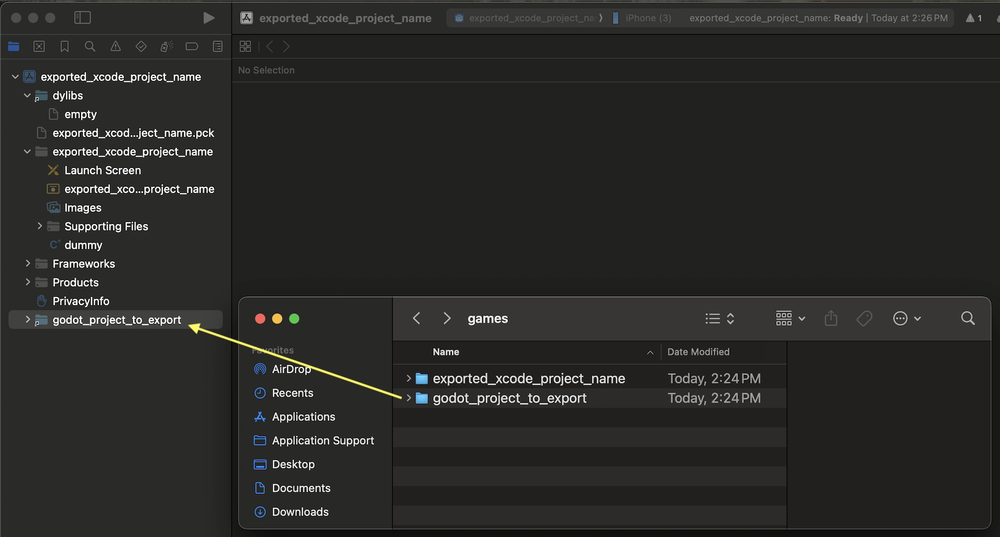
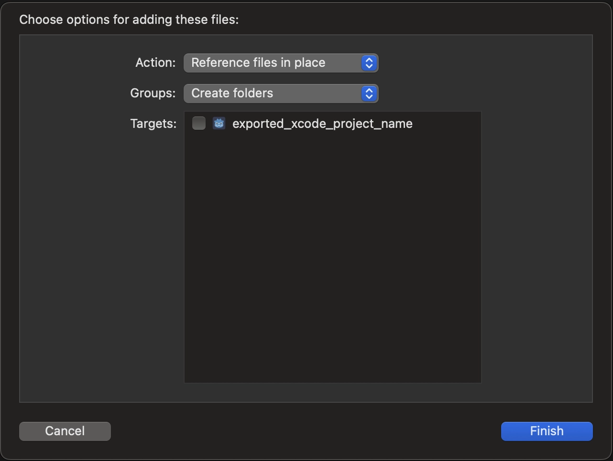
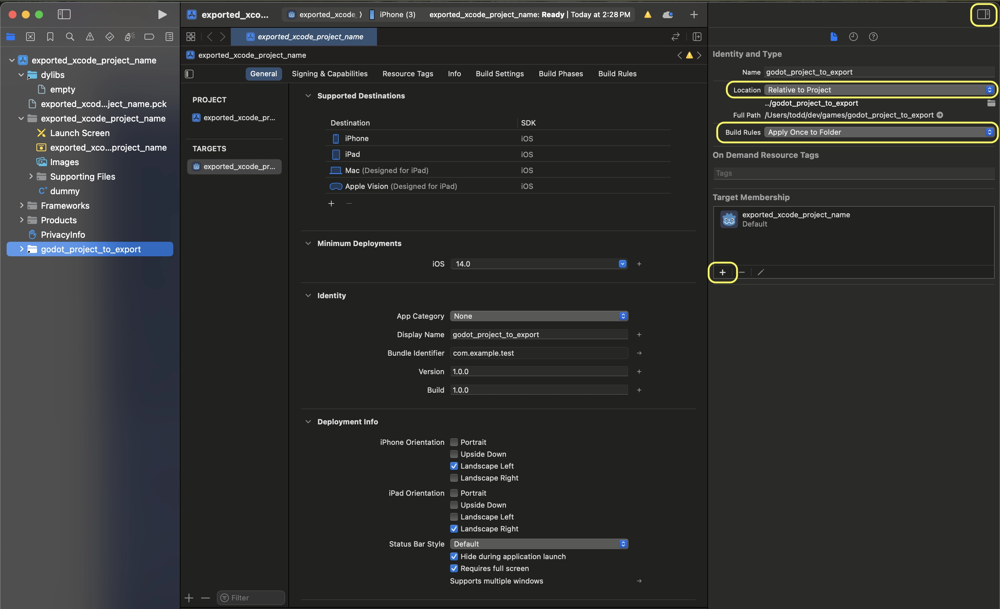
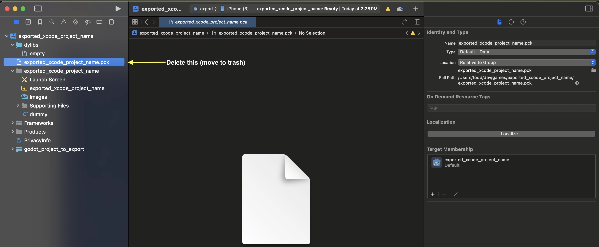

Exporting for iOS
See also
This page describes how to export a Godot project to iOS. If you're looking to compile export template binaries from source instead, read Compiling for iOS.
These are the steps to load a Godot project in Xcode. This allows you to build and deploy to an iOS device, build a release for the App Store, and do everything else you can normally do with Xcode.
Attention
Projects written in C# can be exported to iOS as of Godot 4.2, but support is experimental and some limitations apply.
Requirements
You must export for iOS from a computer running macOS with Xcode installed.
Download the Godot export templates. Use the Godot menu: Editor > Manage Export Templates
Export a Godot project to Xcode
In the Godot editor, open the Export window from the Project menu. When the Export window opens, click Add.. and select iOS.
The App Store Team ID and (Bundle) Identifier options in the Application category are required. Leaving them blank will cause the exporter to throw an error. The bundle ID must be unique.
Note
A valid bundle ID can only contain alphanumeric characters, hyphens, and periods (A-Z, a-z, 0-9, -, and .).
Apple recommends using reverse-DNS format (e.g. com.example.your-game) of a domain you own, so that your bundle ID is guaranteed to be unique.
Bundle IDs are case-insensitive. See CFBundleIdentifier.
Note
JSON text did not start with array or object and option to allow fragments not setABCDE12XYZ and not, e.g., your name as Xcode likes to display in the Signing & Capabilities tab.After you click Export Project, there are still two important options left:
Path is an empty folder that will contain the exported Xcode project files.
File will be the name of the Xcode project and several project specific files and directories.

Note
This tutorial uses exported_xcode_project_name, but you will use your project's name. When you see exported_xcode_project_name in the following steps, replace it with the name you used instead.
Note
Avoid using spaces when you choose your exported_xcode_project_name as this can lead to corruption in your XCode project file.
When the export completes, the output folder should look like this:

Warning
The iOS simulator only supports the Compatibility renderer.
Apple Silicon Macs can run iOS apps natively, so you can run exported iOS projects directly on an Apple Silicon Mac without iOS simulator limitations.
Opening exported_xcode_project_name.xcodeproj lets you build and deploy like any other iOS app.
Active development considerations
The above method creates an exported project that you can build for release, but you have to re-export every time you make a change in Godot.
While developing, you can speed this process up by linking your Godot project files directly into your app.
In the following example:
exported_xcode_project_name is the name of the exported iOS application (as above).
godot_project_to_export is the name of the Godot project.
Note
godot_project_to_export must not be the same as exported_xcode_project_name to prevent signing issues in Xcode.
Steps to link a Godot project folder to Xcode
Start from an exported iOS project (follow the steps above).
In Finder, drag the Godot project folder into the Xcode file browser.

In the dialog, make sure to select Action: Reference files in place and Groups: Create folders. Uncheck Targets: exported_xcode_project_name.

See the godot_project_to_export folder in the Xcode file browser.
Select the godot project in the Project navigator. Then on the other side of the XCode window, in the File Inspector, make these selections:
Location: Relative to Project
Build Rules: Apply Once to Folder
add your project to Target Membership


Delete exported_xcode_project_name.pck from the Xcode project in the project navigator.

8. Open exported_xcode_project_name-Info.plist and add a string property named godot_path (this is the real key name) with a value godot_project_to_export (this is the name of your project)

That's it! You can now edit your project in the Godot editor and build it in Xcode when you want to run it on a device.
Plugins for iOS
Special iOS plugins can be used in Godot. Check out the Creating iOS plugins page.
Environment variables
You can use the following environment variables to set export options outside of the editor. During the export process, these override the values that you set in the export menu.
Export option |
Environment variable |
|---|---|
Encryption / Encryption Key |
|
Options / Application / Provisioning Profile UUID Debug |
|
Options / Application / Provisioning Profile UUID Release |
|
Troubleshooting
xcode-select points at wrong SDK location
xcode-select is a tool that comes with Xcode and among other things points at iOS SDKs on your Mac. If you have Xcode installed, opened it, agreed to the license agreement, and installed the command line tools, xcode-select should point at the right location for the iPhone SDK. If it somehow doesn't, Godot will fail exporting to iOS with an error that may look like this:
MSB3073: The command ""clang" <LOTS OF PATHS AND COMMAND LINE ARGUMENTS HERE>
"/Library/Developer/CommandLineTools/Platforms/iPhoneOS.platform/Developer/SDKs/iPhoneOS.sdk"" exited with code 1.
In this case, Godot is trying to find the Platforms folder containing the iPhone SDK inside the
/Library/Developer/CommandLineTools/ folder, but the Platforms folder with the iPhone SDK is
actually located under /Applications/Xcode.app/Contents/Developer. To verify this, you can open
up Terminal and run the following command to see what xcode-select points at:
xcode-select -p
To fix xcode-select pointing at a wrong location, enter this command in Terminal:
sudo xcode-select -switch /Applications/Xcode.app
After running this command, Godot should be able to successfully export to iOS.
Export options
You can find a full list of export options available in the EditorExportPlatformIOS class reference.